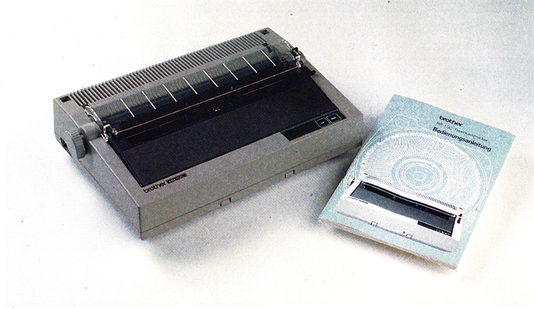
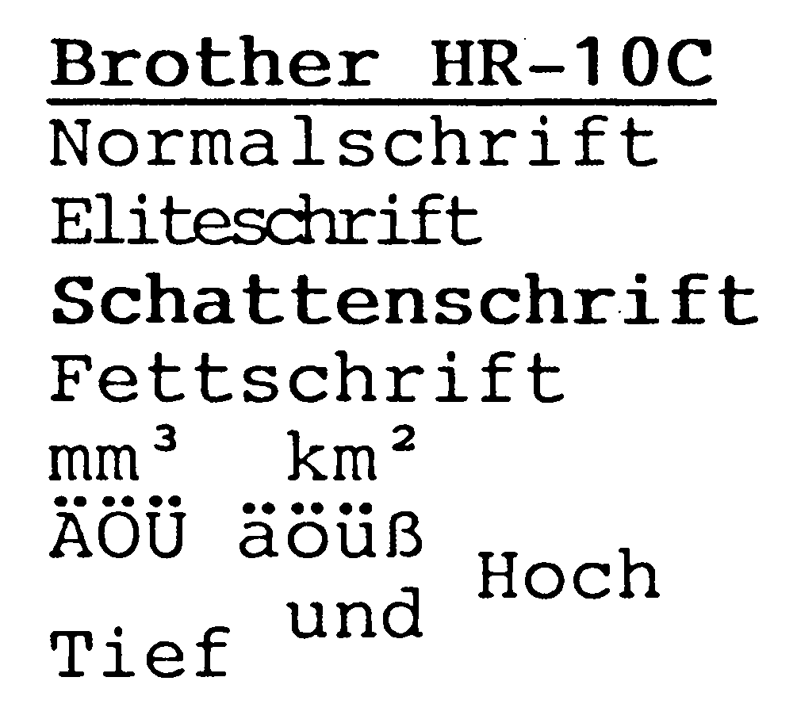
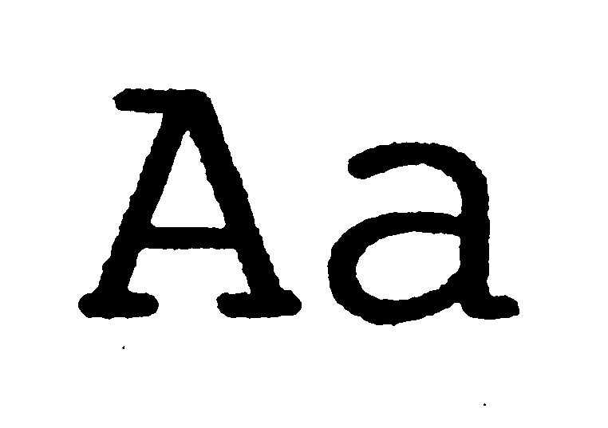

Brother HR-10C — Korrespondenz mit Typenrad
Im Schönschreiben ganz groß, im Preis bescheiden, direkt anschließbar an den C 64, das ist der Brother HR-10C.
Wer auf die optische Qualität seines privaten oder geschäftlichen Schriftverkehrs besonderen Wert legt, ist mit dem Einsatz eines Typenraddruckers zur Erledigung der Korrespondenz gut beraten. Obwohl inzwischen zahlreiche Matrixdrucker die NLQ-Schrift (Schönschriftmodus) beherrschen, sind Typenraddrucker in der Qualität ihres Schriftbildes nach wie vor unübertroffen.
Der japanische Büromaschinenhersteller Brother ist in Europa einer der führenden Anbieter von elektronischen Schreibmaschinen und ist auf dem Markt mit zahlreichen Matrix-, und Typenraddruckermodellen mit diversen Schnittstellen für alle gängigen Computer vertreten. Speziell für den C 64 und den C 128 ist der Typenraddrucker HR-10C, ein Gerät der unteren Preisklasse, vorgesehen. Der Drucker wird mit dem seriellen Commodore-Interface-Kabel ausgeliefert und ist somit direkt anschließbar. Das Handbuch ist deutschsprachig und enthält auf seinen 133 Seiten eine anschauliche Beschreibung der Installation des Druckers und zahlreiche Abbildungen. Im Anhang werden EDV- und Druckerfachausdrücke erläutert. Die Inbetriebnahme gelingt dann auch ohne größeren Aufwand. Dank der vorhandenen Commodore-Schnittstelle entfallen besondere Anpassungen an den Computer. Der Drucker ist zirka sechs Kilogramm schwer und hat auf der Vorderseite einen praktischen Handgriff zum Tragen (siehe Bild 1). In Verbindung mit dem SX 64 ist somit mobile Textverarbeitung möglich. Wie bei der 1541-Floppy sind zwei 6polige DIN-Stecker auf der Druckerrückseite zum Anschluß des seriellen Kabels vorhanden. Gleich daneben, sehr gut zugänglich, befinden sich die DIP-Schalter zur Einstellung der verschiedenen Druckarten. Damit kann die Geräteadresse wahlweise auf 4 oder 5 eingestellt, der Zeilenvorschub geregelt, Standard-ASCII oder CBM-ASCII und acht nationale Zeichensätze ausgewählt werden. Am Bedienerfeld findet der Anwender zwei Tasten für On-, Offline und Zeilenvorschub sowie eine Kontrolleuchte. Der Einsatz beziehungsweise der Wechsel der Farbbandkassette gelingt ohne Mühe. Neben den Carbonbändern (11,90 Mark), die nur einmal abrollen, dafür aber ein gestochen scharfes Schriftbild (Bild 2 und Bild 3) erzeugen, können auch längerlebende Nylongewebebänder (11,90 Mark) verwendet werden. Die Kassetten sind in den Farben Schwarz, Rot, Blau, Grün oder Braun erhältlich.



Bei einem Matrixdrucker können die vorhandenen Schriftarten durch Steuersequenzen ausgewählt, beziehungsweise eigene Zeichensätze definiert werden. Bei Typenraddruckern wird eine andere Schriftart nur durch den Wechsel des Typenrades erreicht. Für den HR-10C bietet Brother über 100 Typenräder (59,85 Mark) mit unterschiedlichen Zeichensätzen (Tabelle) an. Die Typenräder sind in durchsichtigen Plastikkassetten eingeschlossen. Eine Beschädigung der empfindlichen Speichen des Rades ist somit ausgeschlossen. Das Auswechseln der Typenräder geht problemlos und rasch durch das sogenannte Drop-In System. Der HR-10C ist für die Verwendung von Einzelblättern vorgesehen, kann aber wahlweise gegen Aufpreis mit einem Traktor zum Transport von Endlospapier ausgestattet werden. Das Einzelblatt wird wie bei einer Schreibmaschine manuell eingezogen und ausgerichtet, leider fehlt hierbei eine Papierstütze. Zum Überprüfen der Druckerfunktionen ist eine Selbsttestroutine vorhanden, welche den Zeichenvorrat der jeweils eingelegten Typenscheibe ausdruckt.
| Name des Druckers: | Brother HR-10C | empfohlener Preis: | 599 Mark |
|---|---|---|---|
| Druckertyp: | Typenrad-Schreibwerk mit 96 Zeichen je Druckrad | ||
| Papierarten: | Einzel, Endlos | Zeichenvorrat: | CBM + ASCII + 8 nat. |
| Papierformate: | Einzel, max. 292 mm Endlos, max. 240 mm |
Durchschläge: | bis zu 3 |
| Zeichen/Zeile: | Bis zu 120 (Pitch 1/15″) | Selbsttest: | Ja |
| Pufferspeicher: | 100 Byte | Rückwärtstransport: | Ja |
| Geschwindigkeit angegeben: | 12 Zeichen/Sekunde | ||
| Geschwindigkeit Praxistest: | 9 Zeichen/Sekunde | Probetext: | 17:40 Minuten |
| Ladbar. Zeichensatz: | Nein | Grafikmodi: | Nein |
| Hexdump: | Nein | Halbautom. Einzelblatt: | Nein |
| Unterstreichen: | Ja | Ausstreichen: | Ja |
| Zeilenabstand: | Standard 6 Zeilen pro Zoll, in Inkrementen von 1/148 Zoll einstellbar | ||
| Zeichenabstand: | Standard 10, 12, 15 Zeichen pro Zoll, in Inkrementen von 1/120 Zoll einstellbar | ||
| Funktionstasten: | Line Feed, On-, Offline | ||
| Ausstattung: | serielle Commodore-Schnittstelle, Handbuch | ||
| Schriftarten: | 9 Pica-, 7 Elite-, 2 Schmalschrift-Typenräder, Doppelt, Fett | ||
| Sonderzubehör: | Traktor für Endlospapier | ||
Problemloser Betrieb
Wer bisher einen Drucker der MPS-Reihe für die Ausgabe seiner Druckerzeugnisse einsetzte, braucht beim Brother HR-10C nicht umzulernen. Wie bei Commodore-Druckern wird auch hier mit OPEN ein Kanal zum Drucker geöffnet. Auch das CMD-Kommando, zum Beispiel für den Ausdruck von Listings, funktioniert klaglos. Sogar die Commodore-Steuerzeichen sind im Druckbild kenntlich gemacht. Allerdings nicht als Grafikzeichen wie bei einem Matrixdrucker, sondern als unterstrichene Buchstaben. Die vorhandenen Steuersequenzen ermöglichen dem Anwender das Erscheinungsbild des Ausdrucks zu variieren. Der HR-10C kann automatisch unterstreichen und durchstreichen, doppelt und fett drucken. Zur Druckformatierung kann ein Vertikal- und Horizontaltabulator, die Seitenlänge, der Zeilenabstand, der rechte und linke Rand, der Zeichenabstand mit 10, 12 oder 15 Zeichen pro Zoll sowie weitere Funktionen eingestellt werden. Durch die Möglichkeit bereits ausgedruckte Zeichen gezielt mit einem anderen Zeichen zu überdrucken, kann der auf dem Typenrad vorhandene Zeichenvorrat erweitert werden. Auf jeder Typenscheibe für den HR-10C sind 96 Zeichen vorhanden. Als Lebensdauer werden von Brother 10 Millionen Anschläge angegeben. Bis zu drei Kopien können in einem Arbeitsgang gefertigt werden. Die Präzision der bei einem Typenraddrucker besonders beanspruchten Mechanik ist beim HR-10C gut. Trotz Dauereinsatz ergab sich im Testbetrieb kein Ausfall. Dagegen ist die Druckgeschwindigkeit eher bescheiden. Trotz des bidirektionalen Drucks und der Druckwegoptimierung schafft der HR-10C nur 12 Zeichen pro Sekunde. Entsprechend der Preisklasse des Geräts müssen hier Kompromisse geschlossen werden. Unseren Probetext schaffte der HR-10C in etwa 18 Minuten. Ein Matrixdrucker der gleichen Preisklasse benötigt dafür zirka vier Minuten, allerdings mit wesentlich schlechterem Schriftbild. Der Druckpuffer ist mit nur 100 Byte für heutige Verhältnisse zu klein dimensioniert. Dadurch wird der Computer beim Ausdruck blockiert und kann, während der Drucker beschäftigt ist, keine Eingaben annehmen. Der Geräuschpegel beim Ausdruck beträgt etwa 60 dBA. Verglichen mit einem modernen Matrixdrucker hämmert der HR-10C subjektiv betrachtet sehr laut.
Matrixdrucker mit 24 Nadeln, die fast das Schriftbild einer Schreibmaschine erreichen, schnell und grafikfähig sind, gibt es erst ab etwa 1500 Mark. Dieser Preis überschreitet in der Regel das Budget eines Heimanwenders. Trotzdem können auch mit wesentlich geringerem Kapitaleinsatz optimale Korrespondenz und Grafiken gedruckt werden. Zu lösen ist das Problem mit der Anschaffung eines einfachen Matrixdruckers, den es heute schon ab 300 Mark gibt, für die Grafiken sowie den zusätzlichen Erwerb eines Typenraddruckers zur Textverarbeitung (zirka 600 Mark). Für zusammen etwa 900 Mark erhält man auf diese Art sehr gute Druckerzeugnisse — vorausgesetzt, der Platz am Schreibtisch reicht aus. Wenn es also nicht so sehr auf den raschen Ausdruck ankommt, dafür auf das schöne Schriftbild besonderen Wert gelegt wird, ist der Brother HR-10C für 599 Mark eine preiswerte Alternative.
(Erich Tassoti/aw)Info: Brother GmbH, Im Rosengarten 14, 6368 Bad Vilbel